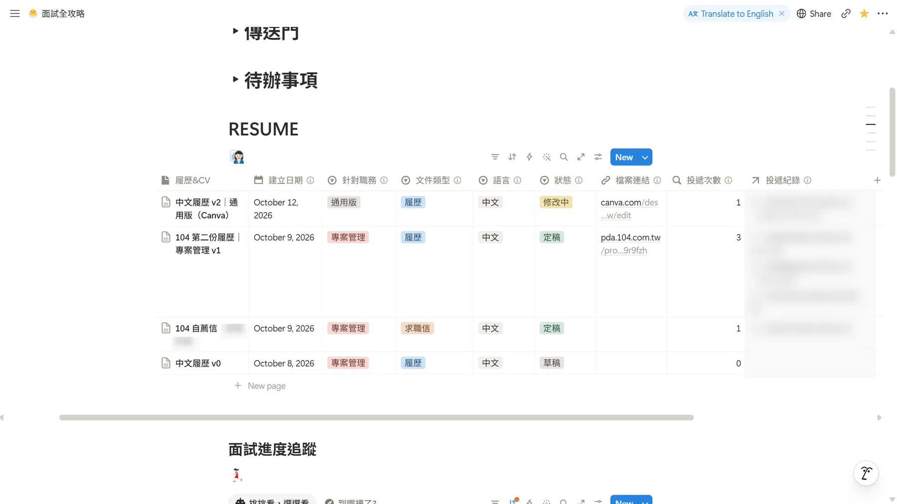
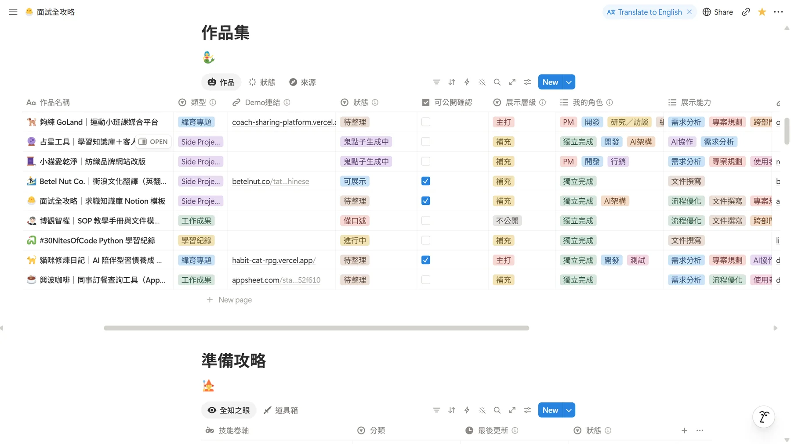
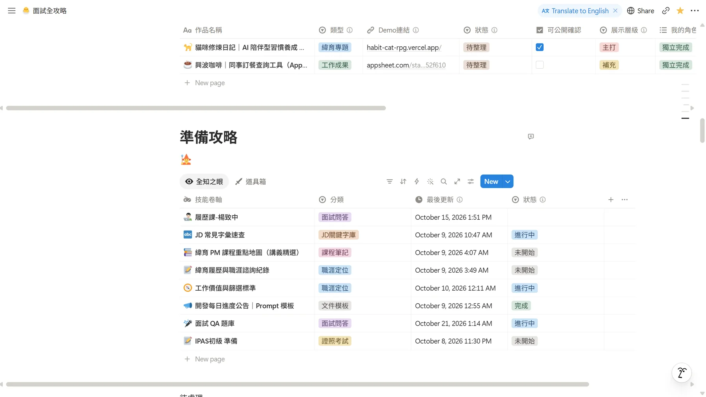
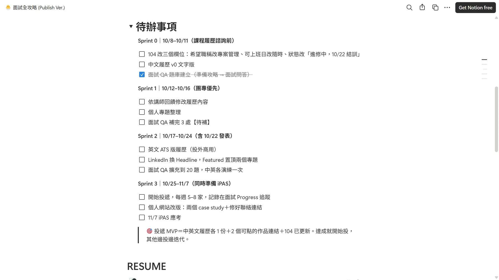

問題與想法
求職資訊散落各處，想用的時候找不到。
起點
我不知道哪一版履歷投了哪家
轉職時，履歷版本、投遞紀錄、作品素材、面試準備，散在 Canva、104、資料夾和聊天紀錄裡。很難知道「哪一版履歷投了哪家」、「哪個作品還沒整理」。
我的做法：把求職當成一個專案來管理，有資料庫、有狀態、有進度，也讓別人不用問就會用。
我怎麼設計
資料庫分工、互相連動，再用狀態流程管理進度。
資訊架構
四個資料庫，各管一件事
履歷版本
每一版履歷、求職信一筆紀錄，標記針對的職務、語言、狀態與檔案連結。
職缺看板
每個職缺的投遞狀態與進度，一眼看出現在卡在哪一關。
作品素材
記錄每個作品的類型、狀態、展示層級與可展示的能力。
QA 題庫與考試準備
面試問答、JD 關鍵字、課程筆記與證照考試，集中在同一處。
資料庫連動
這版履歷投了幾次，系統自己算
履歷用「關聯」連到投遞紀錄，再用「彙總」自動算出這一版投了幾次。要查哪一版履歷投了哪些公司，不用再翻資料夾。
狀態流程
把「進度」變成可以篩選的欄位
職缺
作品集
讓別人看得懂
每個欄位都寫了說明
因為要給同學複製使用，每個欄位都附上說明，並加上頁面範本（面試紀錄、面試心得），讓人打開就知道怎麼填。
v2：AI 求職助理
把跟 AI 協作求職的流程，整理成可複製的 Prompt（2026/10/09）。
問題
還是要手動抄職缺
模板分享給全班後，同學還是要手動把 104 職缺一個個抄進 Notion，也不知道哪些職缺真的適合自己。
做法
基本版先填表，進階版再幫忙篩選
丟網址，自動填表
丟 104 網址，AI 讀職缺，再照欄位對照自動填進「面試進度追蹤」。
先懂你，再評分
AI 先讀履歷與作品集、問 10–15 個價值觀問題，建立「工作價值與篩選標準」。之後每個職缺都查公司評價，給適合度 1–10 分與 🔴🟡🟢 投遞優先度。
資料庫同步新增「適合度」、「投遞優先度」兩個欄位。
AI 邊界設計
AI 負責整理，人負責最後把關
讀不到職缺就請使用者貼文字，不猜內容；查不到的資料留空，不編造。
資料庫沒有的選項先問使用者，不擅自改結構。
進階版先討論，使用者同意才寫入 Notion。
公司評價必附來源與日期，評論太少會提醒參考性有限。
產品思維
先在自己身上跑過，再開放給同學
我先在自己身上跑過整套流程（分析 10 多個職缺），驗證可行才拆成基本／進階兩級開放給同學，並依使用場景持續迭代。例如把「窗口」欄位從人員／網址改成文字，並新增「鬼點子生成中」狀態。
我把自己的求職流程先用 AI 自動化，跑順之後產品化成模板加 Prompt 分享給全班。設計時最重視的是 AI 的邊界：不編造、不擅改、先討論再寫入，最後由人把關。
畫面
公開版 Notion 畫面




想看完整內容，請用上方的「作品連結」。
結果與能力
做成模板，分享給全班
這套系統做成公開模板，分享給緯育全班同學複製使用。